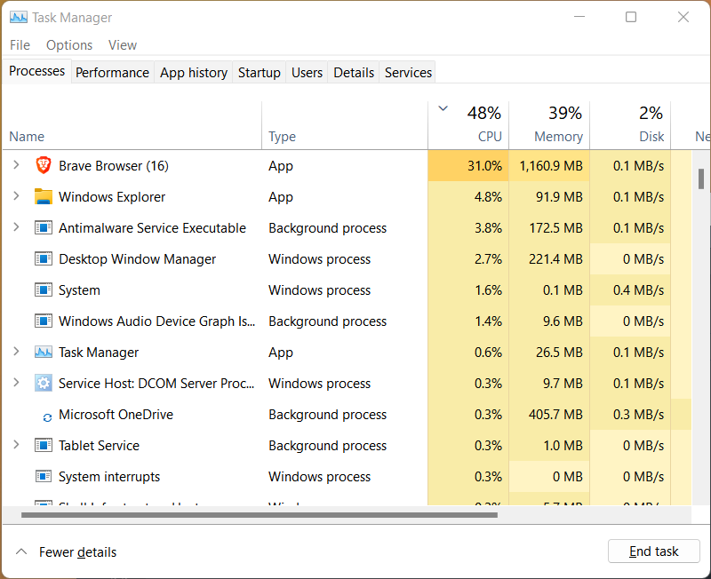

Hydrology
Hydrology is the study of water across the earth system. I will tell you some interesting phenomenal for hydrology in this blogs plot. The main goal of writing post is to summarize the knowledge of my understanding of Water resource and Hydrology.
Mostly I will refer two books of hydrology “Applied Hydrology” (Chow, Maidment, and Mays 1988) and “Rainfall-Runoff Modelling: The Primer” (Beven 2012)
Branches of Hydrolgy
Why computational Hydrology
plot(cars)

Figure 1: A test image for directory structure.
if(!require(tidyverse)){install.packages("tidyverse");library(tidyverse)}
Data <- read_csv(file = here::here("content/post/2022-07-02-Computational-Hydrology", "german_credit.csv"))
plot(Data$Creditability)